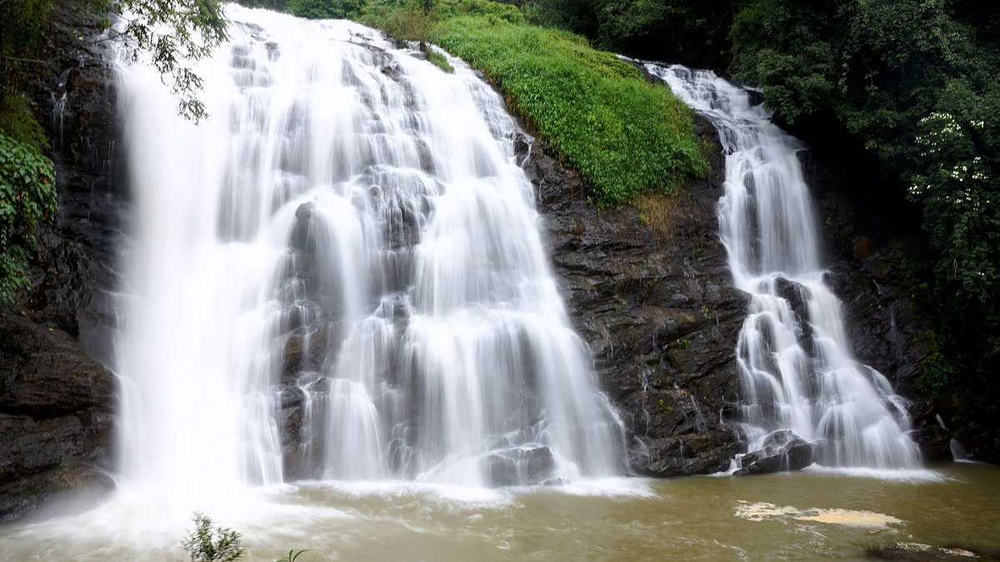

PLACES
PLACES TO VISIT IN COORG
THADIYANMOL PEAK
Thadiyandamol is the highest mountain of Madikeri taluk Kodagu district, Karnataka, India. It is the third highest peak in Karnataka, after Mullayyanagiri & Kudremukha. It is located Western Ghats range, and reaches an elevation of 1,748 m. The mountain has patches of shola forests in the valleys.
| DETAILS |
| Easiest route | HIKE |
| Elevation |
1,748 m (5,735 ft) |
| Location | Madikeri Taluk , Kodagu District, Karnataka, India |
| Parent range | Western Ghats |
ABBEY FALLS

Abbey falls are located 8 kms from Madikeri and is very easy to reach by a car. It involves about 10 mins walk on a well-constructed path through a coffee estate. Though the waterfall is perennial in nature, the best viewing time is in monsoons when water flow is at its peak. There are a also lot of eateries near the entrance to the falls. The drive to the falls is slightly steep so the only advise is to visit this place in the morning or afternoon to avoid getting caught in a rain shower and getting stuck.
| DETAILS |
|---|
| Elevation | Height: 21.30 m |
| Location | Kodagu, in the Western Ghats in Karnataka,located 8 km from the Madikeri |
RAJA'S SEAT
A spectacle of layers of greenery, chain of high and low-rise-mountains attired with mist, the Raja Garden was a one-time-favorite of the kings of Kodagu who used to watch the setting sun, and spend time with their queens here. It is shaped like a small square in brick and mortar, with four pillars bridged by arches, enhanced by beautiful surroundings. This spot was a favorite place of recreation for the Rajas and hence was permanently associated with them. It is built on a high level ground with a commanding view of the cliffs and valleys to the west.
Location: Raja's Seat (Seat of the King) is a seasonal garden of flowers and artificial fountains. It is one of the most important tourist spots in Madikeri of Coorg District. It is 270 km away from Bangalore, the capital of Karnataka.
GOLDEN TEMPLE
Fringed with the bountiful Western Ghats, Madikeri is one of the best places to know about the Tibetian culture. Snuggled at a distance of 90 km from Mysore the Golden Temple is one of the most wonderful places to visit in Bylakuppe. The entire area has more than 1000 Tibetians where you can see them chanting mantras and offering prayer to Buddha. The temple is also called as Thegchog Namdrol Shedrub Dargyeling. that is settled amidst the beautiful landscapes emanating serenity. If you are seeking a soulful retreat then you will fall in love with the calmness of the place.
| DETAILS |
|---|
Location | Arlikumari, P.O. Bylakuppe, Mysore, Karnataka, 571104, India |
| Timing | 9:00 am to 5:00 pm |
©Madikeri Tours